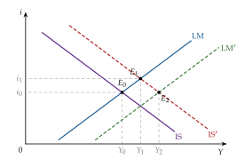
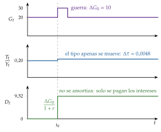
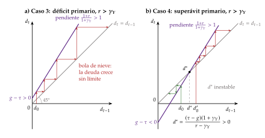
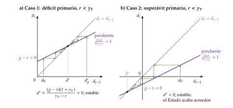
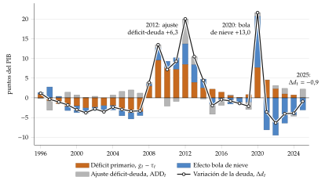
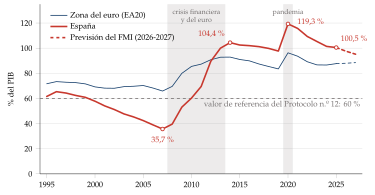
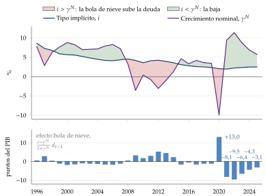
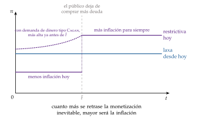
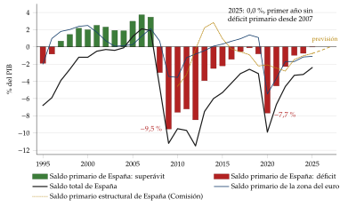

Tema 3.A.39
Déficit público. Conceptos. Financiación y sus consecuencias macroeconómicas. Dominación monetaria y dominación fiscal. La dinámica de la deuda pública y su sostenibilidad.
Restricción del sector público, equivalencia ricardiana, suavización impositiva, dinámica y sostenibilidad de la deuda, señoreaje y dominación fiscal.
Exclusivo Material exclusivo de victorgutierrezmarcos.es y la app Oposición TCEE · DCE. Puedes usarlo libremente para tu estudio personal. No se autoriza su incorporación a otras plataformas, aplicaciones o servicios. Condiciones de uso.
Introducción
Enganche:
«Lo que no son cuentas, son cuentos», dice el refrán. En 2025 las Administraciones Públicas españolas cerraron con un déficit del 2,4 % del PIB y, por primera vez desde 2007, sin déficit primario: todo su déficit fueron los intereses de la deuda, otro 2,4 % del PIB. Aun así, la deuda, del 100,5 % del PIB, sigue casi 13 puntos por encima de la de la zona del euro, del 87,7 %.
Esa deuda es la suma de los déficits del pasado: en 2007 era el 35,7 % del PIB; 2 crisis después, en 2020, llegó al 119,3 %.
Detrás está una pregunta sencilla: ¿quién paga el déficit?
Relevancia:
Para la teoría: la restricción presupuestaria del sector público es el punto en que se encuentran la política fiscal y la monetaria. De ella salen algunos de los resultados más citados de la macroeconomía: la equivalencia ricardiana, la aritmética monetarista desagradable y la teoría fiscal del nivel de precios.
Para la política económica: el gasto de las Administraciones Públicas fue en 2025 el 45,3 % del PIB en España y el 49,8 % en la zona del euro; cómo se financie decide si un estímulo funciona y cuánto ajuste necesita un país endeudado. Las reglas fiscales de la Unión Europea se reformaron en 2024 en torno a un análisis de la sostenibilidad de la deuda de cada país [ver tema 3.B.45].
Para la actualidad: tras la subida de los tipos de interés de 2022-2023, el coste de la deuda vuelve a importar; se discute si un tipo de interés inferior al crecimiento hace barata la deuda, y los bancos centrales tienen en su balance una parte importante de la deuda pública, lo que ha devuelto la dominación fiscal a la primera línea.
Contextualización:
El déficit público es el exceso de los gastos de las Administraciones Públicas sobre sus ingresos en un periodo; la deuda pública, el saldo vivo de lo que deben, que se acumula con los déficits. El déficit es un flujo y la deuda, un stock.
La política fiscal decide el gasto público y los impuestos; la política monetaria, la cantidad de dinero o su precio, el tipo de interés. Las 2 quedan unidas por la restricción presupuestaria del sector público: el gasto que no cubren los impuestos se financia emitiendo deuda o creando dinero.
La literatura ha pasado por 4 etapas:
la keynesiana, de los años 30 a los 70: el déficit como instrumento de estabilización, con el multiplicador de Kahn (1931) y la carga de la deuda de Domar (1944), y el debate sobre si es más expansivo financiarlo con deuda o con dinero en el modelo IS-LM, que Blinder y Solow (1973) cierran con la restricción del Gobierno;
la de la restricción intertemporal y las expectativas racionales, en los 70: Barro (1974) recupera la equivalencia ricardiana y Barro (1979) explica para qué sirve la deuda, mientras la economía política explica por qué se abusa de ella;
la de la interacción entre la política fiscal y la monetaria, de 1981 a los 90: Sargent y Wallace (1981), Leeper (1991) y la teoría fiscal del nivel de precios; antes, Cagan (1956) había mostrado el límite de la financiación con dinero;
la de después de 2008: deudas cercanas al 100 % del PIB, consolidaciones y multiplicadores mayores de lo previsto, tipos de interés inferiores al crecimiento, compras masivas de deuda por los bancos centrales y, desde 2021, la vuelta de la inflación.
Problemática:
¿Cómo se financia el déficit y qué consecuencias tiene hacerlo con impuestos o con deuda?
¿Cuándo es sostenible la deuda pública y qué hacer si no lo es?
¿Quién cierra la restricción del sector público: la política fiscal o el banco central?
Estructura:
La exposición tiene 3 partes, que siguen la restricción presupuestaria del sector público:
I. Conceptos y consecuencias macroeconómicas de la financiación del déficit público (I): definimos el déficit a partir de la restricción y vemos qué consecuencias tiene financiarlo con impuestos o con deuda, del debate tradicional a la equivalencia ricardiana, la suavización impositiva, el sesgo deficitario y los efectos no keynesianos;
II. La dinámica de la deuda pública y su sostenibilidad (II): cuándo se estabiliza la deuda, con la aplicación a España;
III. Aspectos monetarios de la financiación: dominación monetaria y dominación fiscal (III): el señoreaje, su límite y quién cierra la restricción, el banco central o la política fiscal.
La dominación va al final, aunque el título la nombre antes, porque solo se entiende después de la restricción intertemporal y de la comparación entre el tipo de interés y el crecimiento.
Para seguir la deuda pública española y su sostenibilidad: el Observatorio de deuda de la AIReF, https://www.
3.A.39. Déficit público y sostenibilidad de la deuda
Introducción2′30″
I. Conceptos y consecuencias macroeconómicas de la financiación del déficit público10′
1. Restricción presupuestaria del sector público. Definición de conceptos
2. Debate tradicional haciendo uso del marco IS-LM
3. Nueva macroeconomía clásica: equivalencia ricardiana, suavización impositiva y sesgo deficitario
4. Evidencia empírica y efectos no keynesianos
II. La dinámica de la deuda pública y su sostenibilidad8′30″
1. ¿Qué entendemos por sostenibilidad?
2. ¿Qué nivel de déficit público es sostenible? Formulación analítica
3. La dinámica de la deuda. Formulación gráfica
4. Implicaciones de política económica
5. La situación de la deuda pública en España
6. Otras aproximaciones al análisis de la sostenibilidad
III. Aspectos monetarios de la financiación: dominación monetaria y dominación fiscal8′
1. Señoreaje e impuesto inflacionario
2. Hiperinflación: el modelo de Cagan (1956)
3. Dominación monetaria y dominación fiscal
Conclusión1′
Reparto del cante: introducción, 2′30″; I, 10′ (I.1, 2′30″; I.2, 1′; I.3, 4′30″: la equivalencia ricardiana, 2′30″, la suavización impositiva, 1′15″, y el sesgo deficitario, 0′45″; I.4, 2′: la evidencia de la equivalencia, 0′45″, y los efectos no keynesianos, 1′15″); II, 8′30″ (II.1, 0′45″; II.2, 2′; II.3, 2′15″; II.4, 1′30″; II.5, 1′; II.6, 1′); III, 8′ (III.1, 1′30″; III.2, 1′; III.3, 5′30″), y conclusión, 1′. El tribunal ha echado en falta en otros exámenes la restricción presupuestaria intertemporal y se ha quejado de los recorridos largos por escuelas: la restricción se presenta al empezar el bloque I y el IS-LM se canta en un minuto. Lo que la exposición resume (la derivación de Walsh, el IS-LM y las escuelas, el detalle de la deuda española, la estabilidad en el modelo de Cagan y la monetización indirecta) está en los anexos A a E.
I. Conceptos y consecuencias macroeconómicas de la financiación del déficit público
Empezamos por definir el déficit y la deuda a partir de la restricción presupuestaria del sector público y pasamos después a las consecuencias de financiar el déficit de una forma u otra.
Conclusión anticipada: el gasto se paga con impuestos, con deuda o con dinero, y la restricción intertemporal ata las 3 vías. Con hogares que miran al futuro y mercados perfectos daría igual financiarlo con impuestos o con deuda; pero los impuestos distorsionan, muchos hogares no pueden endeudarse y los gobiernos tienden a endeudarse de más, así que la forma de financiar el déficit sí importa.
I.1. Restricción presupuestaria del sector público. Definición de conceptos
I.1.1. La restricción presupuestaria en cada periodo
Consolidando el Tesoro y el banco central, los gastos de cada periodo se pagan con impuestos, con deuda nueva o con dinero nuevo: \[\tag{1} \underbrace{G_t+i_{t-1}D_{t-1}}_{\text{gastos}}=\underbrace{T_t}_{\text{impuestos}}+\underbrace{(D_t-D_{t-1})}_{\text{deuda nueva}}+\underbrace{(M_t-M_{t-1})}_{\text{dinero nuevo}},\] con \(G_t\) el gasto sin intereses (bienes, servicios y transferencias), \(T_t\) los ingresos, \(D_t\) la deuda nominal en manos del público al final de \(t\), emitida a un periodo al tipo \(i_{t-1}\) pactado al emitirla, y \(M_t\) la base monetaria. La derivación con el Tesoro y el banco central por separado está en el anexo A.
Fuentes de financiación del gasto:
los impuestos, ingresos coactivos y sin contraprestación, la principal fuente en casi todos los países;
la deuda, ingresos de hoy a cambio de pagos futuros, que se compra de forma voluntaria;
el dinero: quien tiene el monopolio de emisión (en la zona del euro, el Eurosistema) puede comprar bienes o deuda con base monetaria nueva; es el señoreaje (III.1).
Las tasas, las contribuciones especiales y las multas son ingresos, dentro de \(T_t\); la venta de patrimonio no reduce el déficit en la contabilidad nacional, sino la deuda.1
En porcentaje del PIB: dividiendo por el PIB nominal \(P_tY_t\), con \(g_t\equiv G_t/(P_tY_t)\), \(\tau_t\equiv T_t/(P_tY_t)\), \(d_t\equiv D_t/(P_tY_t)\), el señoreaje sobre el PIB \(s_t\equiv(M_t-M_{t-1})/(P_tY_t)\) y el crecimiento del PIB nominal \(1+\gamma^N_t=(1+\pi_t)(1+\gamma_{Y,t})\), y teniendo en cuenta que \(D_{t-1}/(P_tY_t)=d_{t-1}/(1+\gamma^N_t)\):
\[d_t-d_{t-1}=\underbrace{(g_t-\tau_t)}_{\text{déficit primario}}-\;s_t+\underbrace{\frac{i_{t-1}-\gamma^N_t}{1+\gamma^N_t}\,d_{t-1}}_{\text{efecto bola de nieve}}\tag{2}\]
La deuda en porcentaje del PIB sube con el déficit primario, baja con el señoreaje y crece sola si el tipo de interés supera al crecimiento nominal: es el efecto bola de nieve. Con datos hay que añadir el ajuste déficit-deuda (\(\mathrm{ADD}_t\)): las operaciones que mueven la deuda y no el déficit, como la compra o venta de activos financieros o los préstamos a otros países (II.5).
En términos reales: con el tipo real ex ante \(1+r_{t-1}\equiv(1+i_{t-1})/(1+\mathbb{E}_{t-1}[\pi_t])\) y una inflación igual a la esperada, \((1+i_{t-1})/(1+\gamma^N_t)=(1+r_{t-1})/(1+\gamma_{Y,t})\), y la misma restricción se escribe con el tipo real y el crecimiento real: \[\tag{3} d_t-d_{t-1}=(g_t-\tau_t)-s_t+\frac{r_{t-1}-\gamma_{Y,t}}{1+\gamma_{Y,t}}\,d_{t-1}.\] La regla es no mezclar: el tipo nominal con el crecimiento nominal, o el real con el real.
La inflación no esperada: si la inflación supera a la esperada, \(\gamma^N_t\) sube con \(i_{t-1}\) ya fijado y la ratio de deuda baja. Es un impuesto sobre quien tiene deuda nominal; la inflación esperada, en cambio, ya está en el tipo de interés (el término exacto, en el anexo A).
Déficit total y primario: en porcentaje del PIB, el déficit primario es \(g_t-\tau_t\) y el déficit total le suma los intereses, \(i_{t-1}D_{t-1}/(P_tY_t)\).
I.1.2. La restricción intertemporal: la condición de solvencia
La restricción (2) se cumple cada periodo, pero no limita por sí sola al Estado: podría pagar siempre la deuda con más deuda. Lo que le limita es encadenarla hacia delante.
Con un tipo real \(r\) y un crecimiento \(\gamma_Y\) constantes, despejando \(d_{t-1}\) en (3), \[d_{t-1}=\frac{1+\gamma_Y}{1+r}\left(\tau_t-g_t+s_t+d_t\right),\] y sustituyendo \(d_t\), \(d_{t+1}\)… hasta \(t+K\), \[d_{t-1}=\sum_{k=0}^{K}\left(\frac{1+\gamma_Y}{1+r}\right)^{k+1}\left(\tau_{t+k}-g_{t+k}+s_{t+k}\right)+\left(\frac{1+\gamma_Y}{1+r}\right)^{K+1}d_{t+K}.\]
La condición de no juego de Ponzi exige que la deuda no crezca más deprisa que el factor de descuento: \[\lim_{K\to\infty}\left(\frac{1+\gamma_Y}{1+r}\right)^{K+1}d_{t+K}=0 .\] Nadie compraría en el último periodo una deuda que no se va a pagar, y por inducción hacia atrás, tampoco en ninguno de los anteriores.
Con ella se obtiene la restricción presupuestaria intertemporal o condición de solvencia: la deuda de hoy es igual al valor actual de los superávits primarios y del señoreaje futuros:
\[d_{t-1}=\sum_{k=0}^{\infty}\left(\frac{1+\gamma_Y}{1+r}\right)^{k+1}\left(\tau_{t+k}-g_{t+k}+s_{t+k}\right)\qquad (r>\gamma_Y)\tag{4}\]
La deuda pública se valora como una acción: por el valor actual de lo que promete pagar. Con \(\gamma_Y=0\) es la forma de Walsh (2017, cap. 4). Si \(r<\gamma_Y\), el factor es mayor que 1 y la suma no converge: la ratio de deuda se estabiliza sin superávits primarios y la deuda se puede renovar indefinidamente (II.6).2
La ecuación (4) es el hilo de la exposición, que la lee 3 veces:
como restricción de los impuestos: si se bajan hoy, tendrán que subir mañana (la equivalencia ricardiana y la suavización impositiva, I.3);
como condición de sostenibilidad: lo que cuesta cumplirla depende del tipo de interés frente al crecimiento (bloque II);
como reparto entre las 2 autoridades: si la política fiscal no genera los superávits, la cierra el banco central con señoreaje o el nivel de precios (bloque III).
Son las respuestas a la pregunta del enganche: el déficit lo paga el contribuyente de hoy o el de mañana, el crecimiento cuando supera al tipo de interés o, con inflación, quien tiene dinero y deuda nominal.
Por eso la política fiscal y la monetaria están ligadas: un cambio en la inflación cambia los impuestos o el gasto que hacen falta, y un cambio en la política fiscal puede obligar a cambiar el señoreaje. Si la inflación se ve como un impuesto más, cuánto conviene usarla depende de los demás impuestos disponibles y de por qué se demanda dinero: la teoría de la imposición óptima también tiene implicaciones para la inflación.
I.1.3. Conceptos de déficit y deuda
En la contabilidad nacional (SEC 2010), el saldo público es la capacidad (si es positivo) o necesidad de financiación (si es negativo) del sector de las Administraciones Públicas, que reúne la administración central, las comunidades autónomas, las corporaciones locales y la Seguridad Social [ver tema 3.A.30] [ver tema 4.B.1]. El déficit es la necesidad de financiación. A partir de él se definen los conceptos de la tabla 1, con la notación del temario para los 5 saldos, en porcentaje del PIB (\(b\) es aquí el saldo, positivo si hay superávit).
| Concepto | Definición | Para qué sirve |
|---|---|---|
| Saldo total, \(b\) | Ingresos menos gastos, intereses incluidos; en el SEC 2010, capacidad o necesidad de financiación | Variable del procedimiento de déficit excesivo (3 % del PIB) [ver tema 3.B.45] |
| Saldo primario, \(b^p\) | El total sin los intereses de la deuda | Lo que hace hoy la política fiscal; entra en la dinámica de la deuda |
| Saldo ajustado por el ciclo, \(b^{ca}\) | \(b-\varepsilon\cdot\mathrm{OG}\): el que habría con la brecha de producción \(\mathrm{OG}\) cerrada; \(\varepsilon\), la semielasticidad del saldo a la brecha | Quita el componente cíclico, el de los estabilizadores automáticos [ver tema 4.B.4] |
| Saldo estructural, \(b^e\) | El ajustado por el ciclo sin las medidas puntuales (one-offs) | El que vigilan las reglas fiscales |
| Saldo estructural primario, \(b^{pe}\) | El estructural sin los intereses | Su variación, \(\Delta b^{pe}\), es el esfuerzo fiscal o tono de la política fiscal |
| Déficit operativo | El total menos la parte de los intereses que solo compensa la inflación | Con inflación alta, el total exagera el coste real |
| Deuda PDE | Deuda bruta y consolidada, a valor nominal: efectivo y depósitos, valores y préstamos | El 60 % del PIB del Protocolo n.º 12 del TFUE [ver tema 3.B.45] |
| Deuda neta | La bruta menos los activos financieros del Estado | La vulnerabilidad real del Estado |
| Pasivos contingentes e implícitos | Avales y garantías; compromisos futuros sin deuda emitida (pensiones, sanidad) | La sostenibilidad a largo plazo |
Fuente: Elaboración propia a partir de Parlamento Europeo y Consejo de la Unión Europea (2013), Consejo de la Unión Europea (2009), Unión Europea (2012) y Blanchard (2021, cap. 22).
Saldos: el saldo primario mide lo que hace hoy la política fiscal, sin el peso de los déficits del pasado; el ajustado por el ciclo quita lo que hacen solos los estabilizadores automáticos, y la variación del estructural primario mide la política discrecional: positiva, contractiva; negativa, expansiva [ver tema 4.B.4]. En 2025, España tuvo un saldo total del \(-2{,}4\) % del PIB y un saldo primario nulo; su saldo estructural, según la estimación de la Comisión, fue del \(-3{,}2\) % del PIB potencial.
Déficit operativo: con inflación, parte de los intereses nominales solo compensa la pérdida de valor real de la deuda. El déficit que cambia la deuda real es \[\tag{5} \underbrace{G_t+i_{t-1}D_{t-1}-T_t}_{\text{déficit total}}-\pi_tD_{t-1}=G_t+(i_{t-1}-\pi_t)D_{t-1}-T_t .\] Con una inflación del 10 % y una deuda del 100 % del PIB, el déficit total exagera el real en 10 puntos del PIB.
Deuda: la deuda PDE, la del Protocolo de déficit excesivo, es la que vigilan las reglas europeas: bruta, consolidada (sin las deudas entre Administraciones) y a valor nominal; no incluye los créditos comerciales ni los derechos de pensión. Los valores de referencia del 3 % del PIB para el déficit y del 60 % para la deuda están en el Protocolo n.º 12 del Tratado de Funcionamiento de la Unión Europea. La deuda neta resta a la bruta los activos financieros del Estado: un Estado con mucha deuda bruta y muchos activos líquidos es menos vulnerable. Los pasivos contingentes (avales, garantías) no son deuda hasta que se materializan, y los implícitos, como el gasto futuro en pensiones y sanidad, no se registran nunca como deuda, aunque la Comisión los proyecta.
Por qué el déficit oficial puede engañar: tiene 4 problemas de medición:
la inflación infla los intereses nominales (5);
las privatizaciones no reducen el déficit, sino la deuda, pero el Estado renuncia a los ingresos futuros del activo;
los pasivos implícitos no se registran hasta que se pagan;
el ciclo: en una recesión el déficit sube solo, sin que cambie la política. Por eso se mira el estructural, que a su vez depende de una estimación incierta del PIB potencial: para España en 2025, el FMI calcula un saldo estructural del \(-2{,}8\) % del PIB potencial, 4 décimas mejor que el de la Comisión, del \(-3{,}2\) %.
I.2. Debate tradicional haciendo uso del marco IS-LM
Una vez definidos los conceptos, pasamos a las consecuencias de financiar el déficit. Empezamos por la visión tradicional, que se cuenta en un minuto porque su respuesta depende de un modelo sin futuro.
Idea: con precios y salarios rígidos, el déficit eleva la demanda y, por el multiplicador de Kahn (1931), la renta. En el modelo IS-LM [ver tema 3.A.5], \[\frac{\Delta Y^*}{\Delta\bar G}=\frac{1}{1-c(1-t)+bk/h},\] con \(c\) la propensión marginal a consumir, \(t\) el tipo impositivo, \(b\) la sensibilidad de la inversión al tipo de interés (aquí \(b\) no es el saldo público) y \(k\) y \(h\) las de la demanda de dinero a la renta y al tipo. El término \(bk/h\) es la expulsión (crowding-out): el déficit sube el tipo de interés y desplaza inversión privada.
La forma de financiación importa (gráfico 1):
con deuda, solo se desplaza la IS: sube el tipo de interés y la expulsión es parcial;
con dinero, se desplazan la IS y la LM: el tipo no sube y el efecto es mayor a corto plazo, con riesgo de inflación;
con impuestos, el gasto sigue siendo expansivo, aunque menos: con el tipo de interés dado, el multiplicador del presupuesto equilibrado es 1, y en el IS-LM, menor.
Las escuelas discrepan por las pendientes de las curvas [ver tema 3.A.4] [ver tema 3.A.5]:
para los clásicos, con la LM vertical, la expulsión es total y da igual cómo se financie el déficit;
para los keynesianos, con la LM plana y la inversión poco sensible al tipo, el déficit es muy eficaz;
para los monetaristas, la expulsión del déficit financiado con deuda es casi total, y el monetizado solo es expansivo a corto plazo, con una curva de Phillips vertical a largo [ver tema 3.A.28].
El detalle, con los multiplicadores paso a paso, está en el anexo B.
La restricción del Gobierno: Blinder y Solow (1973) la introducen en el modelo y añaden el efecto riqueza de los bonos sobre el consumo. A largo plazo el presupuesto tiene que cerrar, y con deuda los intereses son un gasto más que solo se cubre con más renta y más recaudación. Por eso, si el sistema es estable, el déficit financiado con deuda acaba siendo más expansivo que el monetizado, al revés que a corto plazo.
Valoración: es un modelo estático, sin expectativas ni restricción intertemporal. La pregunta moderna es otra: si los hogares saben que la deuda de hoy son impuestos de mañana, ¿importa cómo se financie el gasto?

I.3. Nueva macroeconomía clásica
Con las expectativas racionales de la nueva macroeconomía clásica [ver tema 3.A.6], los hogares conocen la restricción intertemporal del Estado (4). Veremos 3 consecuencias:
la equivalencia ricardiana, que dice cuándo da igual financiar el gasto con impuestos o con deuda;
la suavización impositiva, que dice para qué sirve la deuda cuando no da igual;
el sesgo deficitario, que explica por qué hay más deuda de la que justifica esa teoría.
I.3.1. La equivalencia ricardiana (Barro, 1974)
a) Idea
Ricardo comparó pagar una guerra con un impuesto o con un préstamo: en teoría, un contribuyente previsor ahorraría para los impuestos futuros y daría igual, pero dudó de que la gente razonara así y prefirió los impuestos.3 Barro (1974) lo recuperó en «Are Government Bonds Net Wealth?», y Buchanan (1976) le dio el nombre de equivalencia ricardiana.
La pregunta: ¿son los bonos públicos riqueza neta para quien los tiene?
b) Modelo
i) Supuestos
Horizonte infinito: Barro usa generaciones solapadas unidas por herencias. Si cada generación se preocupa por la siguiente y le deja una herencia positiva, la familia decide como un solo agente de vida infinita, una dinastía [ver tema 3.A.29]; es el hogar del modelo de Ramsey-Cass-Koopmans [ver tema 3.A.43].
Impuestos de suma fija: cambian la renta, no los incentivos.
Mercados de capitales perfectos: sin restricciones de liquidez, y el Estado y los hogares se endeudan al mismo tipo de interés \(r\).
Expectativas racionales: los hogares conocen la restricción del Estado [ver tema 3.A.6].
Senda de gasto público dada.
ii) Desarrollo
En términos reales, el hogar representativo gasta en valor actual lo que tiene más lo que ganará, neto de impuestos: \[\tag{6} \sum_{t=0}^{\infty}\frac{C_t}{(1+r)^t}=K_0+(1+r)D_{-1}+\sum_{t=0}^{\infty}\frac{w_tL_t-T_t}{(1+r)^t},\] con \(K_0\) su capital inicial y \((1+r)D_{-1}\) los bonos públicos que tiene, con sus intereses.
El Estado cumple su restricción intertemporal (4), que en niveles y sin dinero es \[\tag{7} \sum_{t=0}^{\infty}\frac{T_t}{(1+r)^t}=\sum_{t=0}^{\infty}\frac{G_t}{(1+r)^t}+(1+r)D_{-1}.\]
Sustituyendo el valor actual de los impuestos de (7) en (6), la deuda se cancela: \[\tag{8} \sum_{t=0}^{\infty}\frac{C_t}{(1+r)^t}=K_0+\sum_{t=0}^{\infty}\frac{w_tL_t-G_t}{(1+r)^t}.\] La riqueza del hogar depende de la senda del gasto, no de la de los impuestos ni de la deuda: los bonos que tiene los compensan exactamente los impuestos futuros con que se pagarán.
Ejemplo: el Estado baja hoy los impuestos en 1 euro y emite 1 euro de deuda, que devuelve mañana con un impuesto de \(1+r\) euros. El valor actual de los impuestos cambia en \(-1+(1+r)/(1+r)=0\): el consumo no cambia; el hogar ahorra el euro y compra la deuda. El ahorro privado sube lo que baja el público, y el ahorro nacional, el tipo de interés y la inversión no se mueven.
iii) Implicaciones
Lo que dice: dada la senda de gasto, da igual financiarla con impuestos o con deuda. La deuda pública no es riqueza neta, sino impuestos aplazados: «no hay plazo que no se cumpla ni deuda que no se pague». Un déficit causado por una rebaja de impuestos no expulsa inversión ni eleva los tipos.
Frente a la renta permanente: una rebaja de impuestos transitoria apenas mueve el consumo de quien suaviza [ver tema 3.A.33]; la equivalencia ricardiana va más allá: ni siquiera una rebaja permanente financiada con deuda lo mueve, si el gasto no cambia.
Lo que no dice: que el gasto público no tenga efectos. Los tiene, porque el gasto sí cambia la riqueza: en un modelo de ciclo real, un gasto mayor empobrece a los hogares y eleva la oferta de trabajo, y el efecto depende de si el gasto es transitorio o permanente [ver tema 3.A.40]. Tampoco habla de la monetización: compara impuestos y deuda.
En economía abierta: un recorte de impuestos con el gasto dado no cambia la cuenta corriente, porque el ahorro privado compensa el menor ahorro público: no hay «déficits gemelos» [ver tema 3.B.11].
c) Extensiones: por qué falla
Cada supuesto que se levanta da una razón del incumplimiento, en el orden de Heijdra (2017):
Vidas finitas: si los hogares no dejan herencias, o solo en parte, una parte de los impuestos futuros la pagarán quienes aún no han nacido. En el modelo de Blanchard (1985), cada persona muere con una probabilidad \(p\) por unidad de tiempo4 y descuenta el futuro a \(r+p\). Si el Estado baja hoy los impuestos en 1 euro y después paga solo los intereses, con un impuesto de \(r\) euros en cada periodo para siempre, los vivos pagan en valor actual \[\int_0^{\infty}r\,e^{-(r+p)s}\,ds=\frac{r}{r+p}<1,\] así que su riqueza sube en \(p/(r+p)\): la deuda es riqueza neta. Con \(p=0\) vuelve la equivalencia. En las generaciones solapadas sin herencias de Diamond (1965), la deuda transfiere renta a los vivos y desplaza capital [ver tema 3.A.29].
Impuestos distorsionantes: si el impuesto cambia los incentivos a trabajar o a ahorrar, el momento en que se cobra importa. Es el punto de partida de la suavización impositiva (I.3.2).
Gasto productivo: si el gasto es inversión que eleva la renta futura y la recaudación, la riqueza cambia por el gasto, no por su financiación. Más que un fallo del teorema, es un aviso para leerlo: lo que mueve la economía es el gasto.
Restricciones de liquidez: si una fracción \(\lambda\) de los hogares consume su renta corriente, \[C_t=\lambda\,(Y_t-T_t)+(1-\lambda)\,C^{\mathrm R}_t,\] con \(C^{\mathrm R}_t\) el consumo de los hogares ricardianos, una rebaja de impuestos de 1 euro financiada con deuda eleva el consumo en \(\lambda\) euros (Campbell y Mankiw estiman \(\lambda\) en torno a 0,5 en Estados Unidos).5 Para esos hogares la deuda pública equivale a darles un crédito que no conseguían [ver tema 3.A.33]. Con hogares de esta regla de pulgar, la equivalencia deja de cumplirse también en los modelos neokeynesianos [ver tema 3.A.7], y una parte importante de los hogares vive al día aunque tenga riqueza ilíquida.
Miopía o racionalidad limitada: hogares que no anticipan los impuestos futuros consumen la rebaja [ver tema 3.A.1].
A estas 5 se añade la incertidumbre sobre quién pagará los impuestos futuros: si se cobrarán en proporción a una renta incierta, una rebaja de impuestos hoy funciona como un seguro y reduce el ahorro por precaución.
d) Valoración
El resultado es lógico y sencillo, y sus supuestos, fuertes; los datos dicen que se cumple solo en parte (I.4.1). Su mayor aportación es obligar a pensar la política fiscal con la restricción intertemporal. Y deja una pregunta: si los impuestos distorsionan, ¿cuándo conviene cobrarlos?
I.3.2. La suavización impositiva (Barro, 1979)
a) Idea
Si la equivalencia ricardiana falla porque los impuestos distorsionan, la deuda sirve para algo: repartir los impuestos en el tiempo. Barro (1979) se pregunta cómo debe hacerlo un Estado que quiere minimizar las distorsiones. Es la suavización del consumo de la renta permanente [ver tema 3.A.33], aplicada a los impuestos.
b) Modelo
i) Supuestos
Los de la equivalencia ricardiana salvo uno: recaudar \(T_t\) (en términos reales) cuesta una distorsión \(Y_t\,f(T_t/Y_t)\) que depende del tipo medio \(T_t/Y_t\), con \(f(0)=0\), \(f'>0\) y \(f''>0\): la pérdida crece más que proporcionalmente con el tipo, como el exceso de gravamen de Harberger, que crece con su cuadrado [ver tema 4.B.11].
El tipo de interés \(r\) es constante y las sendas del gasto \(G_t\) y de la producción \(Y_t\) se conocen.
ii) Desarrollo
El Estado elige la senda de impuestos que minimiza el valor actual de las distorsiones con su restricción intertemporal (7): \[\tag{9} \begin{array}{rl}\displaystyle \min_{\{T_t\}} & \displaystyle \sum_{t=0}^{\infty}\frac{Y_t\,f(T_t/Y_t)}{(1+r)^t} \\ \text{s.a.} & \displaystyle\sum_{t=0}^{\infty}\frac{T_t}{(1+r)^t}=\sum_{t=0}^{\infty}\frac{G_t}{(1+r)^t}+(1+r)D_{-1}\end{array}\]
Con el precio sombra \(\mu\) de la restricción, la condición de primer orden para cada \(T_t\) es \[\frac{f'(T_t/Y_t)}{(1+r)^t}=\frac{\mu}{(1+r)^t}\;\Longrightarrow\;f'(T_t/Y_t)=\mu\quad\text{para todo }t,\] y como \(f'\) es creciente, el tipo medio es el mismo en todos los periodos: \[\tag{10} \frac{T_t}{Y_t}=\bar\tau=\frac{\sum_tG_t/(1+r)^t+(1+r)D_{-1}}{\sum_tY_t/(1+r)^t},\] el que cubre el gasto «permanente» sobre la producción «permanente».6
Con incertidumbre, la condición pasa a ser \(f'(T_t/Y_t)=\mathbb{E}_t[f'(T_{t+1}/Y_{t+1})]\); con \(f\) cuadrática, el tipo sigue un paseo aleatorio y solo cambia con noticias sobre el gasto o la producción permanentes, como el consumo de Hall [ver tema 3.A.33].
La deuda hace el resto: \(D_t=(1+r)D_{t-1}+G_t-\bar\tau\,Y_t\). Con la producción constante, una guerra de un periodo que cuesta \(\Delta G_0\) sube el tipo para siempre lo justo para pagar los intereses de la deuda que deja, \[\Delta\bar\tau\,Y=\frac{r}{1+r}\,\Delta G_0,\] y la deuda sube en \(\Delta G_0/(1+r)\) y se queda ahí: no se amortiza, solo se pagan sus intereses (en porcentaje del PIB baja si la economía crece) (gráfico 2).

Fuente: Elaboración propia a partir de Barro (1979) y Romer (2019, cap. 13). El gasto tiene un pico de un periodo; el tipo impositivo apenas sube y para siempre; la deuda absorbe el pico y no se amortiza.
iii) Implicaciones
El gasto transitorio (guerras, catástrofes, pandemias) se financia con deuda, y el permanente, con impuestos.
En las recesiones, con la producción por debajo de su nivel permanente, lo óptimo es tener déficit: la teoría justifica los déficits contracíclicos y dejar actuar a los estabilizadores automáticos, y desaconseja equilibrar el presupuesto cada año; las reglas deberían mirar al ciclo completo [ver tema 4.B.4].
Es la lógica de Ramsey aplicada al tiempo: Ramsey reparte los impuestos entre bienes para minimizar el exceso de gravamen, con más impuesto donde la base es menos elástica; Barro los reparte entre periodos y, si la base es igual de elástica en todos, con el mismo tipo [ver tema 4.B.11].
c) Extensiones
Un Gobierno impaciente: si descuenta las pérdidas futuras a una tasa \(\rho_G>r\), con \(f(\tau)=\tau^2/2\) y 2 periodos, la condición es \(\tau_0/\tau_1=(1+r)/(1+\rho_G)<1\): cobra menos hoy y más mañana, y se endeuda de más. Es el puente con la economía política (I.3.3).
Deuda contingente: si la deuda puede pagar según el estado de la economía, el Estado no solo suaviza, sino que se asegura frente a las perturbaciones del gasto.
d) Evidencia empírica
Explica bien la historia larga: en Estados Unidos, la deuda sube en las guerras y en las recesiones y baja después, y en el Reino Unido de 1701 a 1918 las guerras se pagaron sobre todo con deuda. No explica, en cambio, los déficits de las economías avanzadas en tiempos de paz y de expansión desde los 70.
e) Valoración
Es una teoría normativa de la deuda: dice cuánta debería haber. Que haya más de la que justifica obliga a mirar a quien decide.
I.3.3. El sesgo deficitario
a) Idea
Desde los 70 las economías avanzadas encadenan déficits también en las expansiones y en tiempos de paz. Es el sesgo deficitario, y la economía política lo explica por cómo se decide el presupuesto: es uno de los fallos del sector público [ver tema 3.A.23].
b) Modelos
Hay 4 explicaciones principales:
Ilusión fiscal: los votantes ven el gasto y las rebajas de impuestos de hoy, pero no los impuestos de mañana; es lo contrario de la equivalencia ricardiana [ver tema 4.B.2].
Deuda estratégica: un Gobierno que puede perder las elecciones usa la deuda para atar las manos a su sucesor, que tendrá que dedicar ingresos a pagarla. Cuanto más polarizadas las preferencias y más inestable el Gobierno, más deuda.7
Fondo común: si cada grupo, región o ministerio decide un gasto \(g_i\) que le beneficia en \(v(g_i)\) y que se paga con un presupuesto común entre \(n\), gasta hasta \(v'(g_i)=1/n\) y no hasta \(v'(g_i)=1\): todos gastan de más, y más cuanto mayor es \(n\). «Lo que es de todos no es de nadie».
Guerra de desgaste: estabilizar exige repartir el coste, y cada grupo espera a que ceda el otro; mientras tanto, el déficit se acumula.
El ciclo político presupuestario añade déficits antes de las elecciones.
c) Evidencia empírica
En las democracias industriales, los gobiernos de coalición y los de corta duración tuvieron mayores déficits tras las crisis de los 70.
d) Valoración
Si el problema está en quién decide, la solución está en las instituciones: reglas fiscales, consejos fiscales independientes como la AIReF y procedimientos presupuestarios que den más poder a quien ve el presupuesto entero, el ministerio de Hacienda [ver tema 4.B.21] [ver tema 3.B.45].
I.4. Evidencia empírica
Una vez vista la teoría, pasamos a los datos: si los hogares se comportan como ricardianos y si una consolidación fiscal puede ser expansiva.
I.4.1. La equivalencia ricardiana en los datos
Consumo: los hogares gastan una parte de las devoluciones y los cheques de impuestos. En Estados Unidos, entre el 20 y el 40 % de las devoluciones de 2001 se gastó en bienes no duraderos en el trimestre en que llegaron, y de los pagos de estímulo de 2008, entre el 12 y el 30 % en no duraderos y entre el 50 y el 90 % contando los duraderos.
Experimentos naturales: Barro (1989) citó a su favor el caso de Israel a mediados de los 80, donde el ahorro privado se movió en sentido contrario al público y el nacional apenas cambió. La divergencia del ahorro de Canadá y Estados Unidos en los 80, en cambio, la atribuyen Carroll y Summers (1987) sobre todo al distinto trato fiscal del ahorro.
Tipos de interés: en Estados Unidos, un punto más de déficit previsto sobre el PIB eleva los tipos a largo plazo entre 20 y 30 puntos básicos, y un punto más de deuda prevista, unos 3 o 4: el efecto existe, pero es pequeño.
Cuenta corriente: una consolidación de un punto del PIB mejora la cuenta corriente en torno a 0,6 puntos: más de lo que predice la equivalencia (nada) y menos de lo que predice la tesis de los déficits gemelos (todo).
Revisiones de la literatura: Bernheim (1987) concluye que no se cumple, y Seater (1993), que es una buena aproximación. La mayoría de los macroeconomistas la ven como un punto de referencia: un resultado limpio que ordena el estudio de por qué no se cumple.
I.4.2. Los efectos no keynesianos de la política fiscal
a) Idea
Si los hogares miran al futuro y la deuda es muy alta, la lógica ricardiana sugiere algo más fuerte: una consolidación fiscal creíble podría aumentar la actividad. Es un efecto no keynesiano, como un multiplicador keynesiano con el signo cambiado.
b) Mecanismos
Una reducción del déficit puede elevar la demanda privada por 4 canales:
expectativas y riqueza: menos gasto hoy anuncia menos impuestos mañana, y suben la renta permanente y el consumo. El efecto es mayor cuanto más alta es la deuda, porque un ajuste a tiempo evita otro mayor y más desordenado después;
credibilidad y prima de riesgo: si el mercado dudaba de la solvencia, el ajuste baja los tipos de interés y sube el precio de los activos, y con ellos la inversión y el consumo;
mercado de trabajo: los recortes de empleo y salarios públicos moderan los salarios privados y suben los márgenes y la competitividad;
composición: los ajustes basados en recortes de gasto son más duraderos y menos recesivos que los basados en subidas de impuestos.
Hacen falta condiciones especiales: una deuda alta y una prima de riesgo elevada, un ajuste creíble y margen para que bajen los tipos o el tipo de cambio.
c) Evidencia empírica
El argumento nació de 2 consolidaciones con crecimiento del consumo: Dinamarca en 1983-1986 e Irlanda en 1987-1989. Los trabajos de Alesina y sus coautores encontraron más episodios de ajustes expansivos, casi siempre basados en el gasto.
d) Valoración
Los casos famosos tenían otras ayudas: en Dinamarca, Irlanda, Finlandia y Suecia el crecimiento vino de las exportaciones, con devaluaciones, bajadas de tipos de interés y pactos de rentas que una economía del euro no tiene.
Medición: los estudios que identifican los ajustes por el saldo ajustado por el ciclo los confunden con los buenos momentos. Con los ajustes identificados por las decisiones anunciadas (método narrativo), las consolidaciones reducen la demanda privada y el PIB a corto plazo.
La experiencia de 2010-2013: en 2012 el FMI reconoció que había subestimado los multiplicadores: sus previsiones suponían en torno a 0,5 y los observados al principio de la crisis fueron muy superiores a 1, más en los países que más ajustaron [ver tema 3.A.40] [ver tema 4.B.26].
Conclusión: con deuda alta y dudas sobre la solvencia, un ajuste creíble y basado en el gasto cuesta menos de lo que dice el multiplicador keynesiano, pero rara vez es expansivo a corto plazo. Sirve para elegir el momento, la composición y el ritmo de la consolidación (II.4) [ver tema 4.B.4].
Recapitulación del bloque: el déficit se financia con impuestos, con deuda o con dinero. Con agentes ricardianos daría igual impuestos o deuda; como los impuestos distorsionan, conviene suavizarlos con deuda; pero muchos hogares no son ricardianos y los gobiernos tienden a endeudarse de más. La pregunta siguiente es hasta dónde puede crecer la deuda sin dejar de ser sostenible.
II. La dinámica de la deuda pública y su sostenibilidad
Una vez vistas las formas de financiar el déficit y sus consecuencias, pasamos a la pregunta de cuánta deuda se puede acumular.
Conclusión anticipada: lo que decide es la diferencia entre el tipo de interés y el crecimiento. Si el tipo es menor, la deuda se estabiliza sola, incluso con un déficit primario; si es mayor, hacen falta superávits primarios, tanto mayores cuanto más deuda, y la credibilidad de esos superávits es lo que hace sostenible la deuda.
II.1. ¿Qué entendemos por sostenibilidad?
El interés por la sostenibilidad nació a finales de los 80, con los grandes déficits federales de Estados Unidos, y volvió con la crisis del euro de 2010-2012. Hay que distinguir 3 conceptos:
liquidez: poder refinanciar los vencimientos. Un Estado solvente puede tener un problema de liquidez si se cierran los mercados (una parada súbita, sudden stop); se resuelve con financiación puente o con un prestamista de último recurso;
solvencia: que se cumpla la restricción intertemporal (4), es decir, que la deuda no supere el valor actual de los superávits primarios y del señoreaje futuros. Si no se cumple, hay que reestructurar;
sostenibilidad: que la política fiscal que garantiza la solvencia se pueda mantener y sea creíble. En la práctica, que la ratio de deuda sobre el PIB se estabilice o baje con alta probabilidad, con un saldo primario económica y políticamente viable.
La solvencia se predica de un Estado y la sostenibilidad, de una política: un Estado puede ser solvente con una política insostenible si se espera que la cambie, y puede ser solvente sobre el papel y no sostenible si la solvencia exige superávits que ninguna sociedad aceptaría.
«Quien debe y paga, no debe nada»: lo que importa no es el nivel de la deuda en sí, sino la capacidad y la voluntad de pagarla. Pero el nivel no es indiferente: con una ratio del 100 % del PIB, cada punto de tipo de interés cuesta 5 veces más superávit que con una del 20 %, y la deuda alta deja menos margen ante la siguiente crisis.
Un resumen en vídeo de cómo analiza el FMI la sostenibilidad de la deuda: Analyze This! Debt Sustainability, https://www.
II.2. ¿Qué nivel de déficit público es sostenible? Formulación analítica
Partimos de (2) sin señoreaje (la política monetaria es independiente o, en el euro, común) y sin inflación no esperada. Con la deuda estable, \(d_t=d_{t-1}=d\), sale el saldo primario que estabiliza la deuda: \[\tag{11} \tau-g=\frac{i-\gamma^N}{1+\gamma^N}\,d=\frac{r-\gamma_Y}{1+\gamma_Y}\,d .\] El superávit primario tiene que cubrir el coste de la deuda viva neto de lo que la diluye el crecimiento: el crecimiento «paga» una parte de la deuda. Si \(r<\gamma_Y\), la deuda se estabiliza aun con déficit primario; si \(r>\gamma_Y\), hace falta superávit.
Determinantes: el margen para el déficit primario es mayor
cuanto menor es el tipo de interés que se paga por la deuda: de ahí la importancia de la credibilidad, y también de la prima de riesgo, que suele subir con la deuda y retroalimenta el problema;
cuanto mayor es el crecimiento real: de ahí la importancia del destino del gasto, corriente o inversión productiva;
cuanto mayor es la inflación, pero solo la que no está en los tipos de interés: la no esperada, o la que llega cuando la deuda es a largo plazo y el tipo de la deuda viva tarda en subir;
cuanto menor es la deuda, si \(r>\gamma_Y\); con \(r<\gamma_Y\) es al revés, más deuda permite un déficit primario estable mayor.
España en 2025: con una deuda del 101,4 % del PIB al empezar el año, un tipo implícito (los intereses de 2025 sobre la deuda de final de 2024) del 2,5 % y un crecimiento nominal del 5,7 %, \[\tau-g=\frac{0{,}025-0{,}057}{1{,}057}\times101{,}4\approx-3{,}1 :\] España podía tener un déficit primario de hasta unos 3 puntos del PIB sin que la ratio subiera. Su saldo primario fue nulo, así que la ratio bajó. Pero el crecimiento nominal de 2025 estaba alto por la inflación, y el tipo implícito irá subiendo a medida que venza la deuda emitida con tipos bajos: si el tipo llegara a igualar al crecimiento, la holgura desaparecería.
La condición dice qué hace falta para que la ratio no suba, pero no a qué nivel conviene estabilizarla: no es lo mismo estabilizarla en el 20 % que en el 100 %, porque el esfuerzo para afrontar una subida de tipos es 5 veces mayor.
II.3. La dinámica de la deuda. Formulación gráfica
Sin señoreaje y con \(r\) y \(\gamma_Y\) constantes, (3) es una ecuación en diferencias de primer orden: \[\tag{12} d_t=\underbrace{(g-\tau)}_{\text{ordenada en el origen}}+\underbrace{\frac{1+r}{1+\gamma_Y}}_{\text{pendiente}}\,d_{t-1} .\]
El diagrama de fases: en abscisas, la deuda al empezar el periodo, \(d_{t-1}\); en ordenadas, al acabarlo, \(d_t\). En la bisectriz la deuda no cambia. La recta corta al eje vertical en el déficit primario y tiene pendiente \((1+r)/(1+\gamma_Y)\). Si corta a la bisectriz, el estado estacionario es \[d^*=\frac{(g-\tau)(1+\gamma_Y)}{\gamma_Y-r},\] estable si la pendiente es menor que 1 (\(r<\gamma_Y\)) e inestable si es mayor (\(r>\gamma_Y\)).8
Salen 4 casos, según el saldo primario y el signo de \(r-\gamma_Y\) (gráficos 3 y 4):
déficit primario y \(r<\gamma_Y\): la deuda converge a un \(d^*>0\); la política es sostenible aunque haya déficit;
superávit primario y \(r<\gamma_Y\): converge a un \(d^*<0\): el Estado acaba siendo acreedor;
déficit primario y \(r>\gamma_Y\): la recta queda por encima de la bisectriz para toda deuda positiva y la deuda crece sin límite: el efecto bola de nieve;
superávit primario y \(r>\gamma_Y\): hay un umbral \(d^*>0\), inestable. Por debajo, la deuda baja; por encima, crece sin límite. Con \(r>\gamma_Y\), cada nivel de deuda exige su superávit, y ese superávit crece con la deuda.
Los casos que importan son el 3 (de dónde viene una crisis de deuda) y el 4 (lo que hay que hacer para evitarla).
Ejemplo: con una deuda del 100 % del PIB, un tipo real del 3,3 % y un crecimiento real del 3,2 %, la deuda solo se estabiliza con un superávit primario de \(\frac{0{,}033-0{,}032}{1{,}032}\times100\approx0{,}1\) puntos del PIB: la recta del caso 4 tiene que cortar a la bisectriz justo en el 100 %.
No es una cuenta mecánica: si la consolidación reduce el crecimiento, la recta baja, pero a la vez gana pendiente, y el superávit calculado ya no basta. Cuánto depende del multiplicador, mayor de lo que se creía en 2010-2011 (I.4.2).

Fuente: Elaboración propia a partir de Walsh (2017, cap. 4). A la izquierda, con déficit primario la deuda crece sin límite. A la derecha, con superávit primario \(d^*\) es un umbral: por debajo, la deuda baja; por encima, se dispara.

Fuente: Elaboración propia. Con la pendiente menor que 1, el estado estacionario es estable: positivo con déficit primario, negativo con superávit.
II.4. Implicaciones de política económica
La ecuación (11) da las vías para reducir la deuda:
Crecer más: reformas que eleven el crecimiento potencial e inversión pública productiva. Es la vía menos dolorosa y la más lenta.
Pagar menos interés: con credibilidad; alargando la vida media de la deuda, que protege de las subidas de tipos, o con represión financiera, que canaliza el ahorro hacia la deuda pública con tipos reales negativos (topes a los tipos de los depósitos, coeficientes de inversión obligatoria en deuda, controles de capital). El término es de McKinnon (1973) y Shaw (1973), que lo usaron para los países en desarrollo; Reinhart y Sbrancia (2015) lo recuperaron para explicar cómo se liquidó la deuda de la Segunda Guerra Mundial.
Consolidar, con superávits primarios. Importan el momento (mejor en las expansiones), la composición (recortar la inversión productiva daña el crecimiento, y no todos los impuestos distorsionan igual), el ritmo (con multiplicadores altos, gradual) y la credibilidad (I.4.2).
Inflación y monetización: la inflación no esperada reduce el valor real de la deuda nominal y el señoreaje la financia (bloque III).
Vender activos: las privatizaciones reducen la deuda bruta, no el déficit, y el Estado pierde los ingresos futuros del activo.
Reestructurar: quitas o aplazamientos cuando no hay solvencia, con un coste en reputación y en acceso a los mercados.
Equilibrios múltiples: si los inversores temen un impago, exigen más interés, la bola de nieve crece y el impago se vuelve más probable: la crisis puede cumplir su propia profecía. En la zona del euro, los Estados se endeudan en una moneda que no emiten, y por eso son más vulnerables a esas crisis que un país con banco central propio. Las operaciones monetarias de compraventa (OMT), anunciadas tras el «haré lo que sea necesario» de Draghi en 2012, y el instrumento para la protección de la transmisión (TPI) de 2022 eliminan el equilibrio malo con la promesa de comprar deuda, con condiciones [ver tema 3.B.26] [ver tema 3.B.43].
Reglas fiscales: atan las manos del Gobierno frente al sesgo deficitario (I.3.3) y dan credibilidad al ajuste. En la Unión Europea, desde 2024 [ver tema 3.B.45]:
se mantienen los valores de referencia del 3 % del PIB para el déficit y del 60 % para la deuda y el procedimiento de déficit excesivo;
la regla operativa es una senda de gasto primario neto (sin intereses, sin el gasto cíclico en desempleo y sin las medidas discrecionales de ingresos), fijada en planes fiscal-estructurales de 4 años, ampliables a 7 con reformas e inversiones, a partir de un análisis de sostenibilidad de la deuda;
con salvaguardias: la deuda debe bajar de media al menos 1 punto del PIB al año si supera el 90 % y 0,5 si está entre el 60 y el 90 %, y el déficit estructural tiene que converger hacia un margen del 1,5 % del PIB;
y con requisitos para los marcos presupuestarios nacionales, entre ellos las instituciones fiscales independientes, como la AIReF en España [ver tema 4.B.21].
II.5. La situación de la deuda pública en España
La descomposición: con datos, la variación de la ratio de deuda se reparte en 3 componentes, como hacen Esteve y Prats (2023) (gráfico 5): \[\tag{13} d_t-d_{t-1}=\underbrace{(g_t-\tau_t)}_{\text{déficit primario}}+\underbrace{\frac{i_t-\gamma^N_t}{1+\gamma^N_t}\,d_{t-1}}_{\text{bola de nieve}}+\mathrm{ADD}_t ,\] con \(i_t\) el tipo implícito, los intereses pagados en \(t\) sobre la deuda de final de \(t-1\) (por eso aquí lleva el subíndice \(t\)), y \(\mathrm{ADD}_t\) el ajuste déficit-deuda.9 Para que baje la deuda hacen falta superávits primarios, un crecimiento nominal mayor que el tipo implícito, \(i_t<\gamma^N_t\), o un ajuste negativo.

Fuente: Elaboración propia con datos de Eurostat (Eurostat, 2026b, 2026a) y la ecuación (13); idea de Esteve y Prats (2023).
La evolución (gráficos 5 a 7):
de 1996 a 2007 la deuda bajó del 65 % al 35,7 % del PIB, con superávits primarios desde 1997 y una bola de nieve favorable desde 1999;
la crisis financiera la llevó al 104,4 % en 2014, con déficits primarios de hasta el 9,5 % del PIB (2009), una bola de nieve desfavorable y un ajuste déficit-deuda grande en 2012 y 2013 (6,3 y 2,1 puntos): los años del préstamo bilateral a Grecia, las aportaciones al FEEF y al MEDE, el rescate bancario (FROB) y el fondo del déficit de tarifa eléctrica (FADE);
la pandemia la llevó al 119,3 % en 2020: el déficit primario volvió al 7,7 % y la bola de nieve sumó 13 puntos, porque la deuda costaba un 2,1 % y el PIB nominal cayó un 9,9 %; la reclasificación de la Sareb en las Administraciones Públicas añadió unos 34.000 millones de deuda, de los que 9.891 fueron déficit;

Fuente: Eurostat (gov_10dd_edpt1, notificación de octubre de 2026) (Eurostat, 2026b); previsiones de 2026 y 2027, Fondo Monetario Internacional (2026b) y Comisión Europea (2026a). Zona del euro, EA20.
De 2021 a 2025 la deuda bajó al 100,5 %, sobre todo por la bola de nieve, que juega a favor (entre \(-9{,}5\) y \(-3{,}1\) puntos al año): el PIB nominal ha crecido muy por encima de un tipo implícito que solo ha subido del 1,9 al 2,5 % pese a la subida de tipos del BCE. El déficit primario se ha cerrado año a año hasta desaparecer en 2025, y el ajuste déficit-deuda, que desde 2015 ha oscilado entre \(-2{,}6\) y \(+1{,}4\) puntos, sumó 2,2 en 2025. En agosto de 2026 la deuda era del 99,7 %, y el FMI prevé el 97,6 % para final de año.

Fuente: Elaboración propia con datos de Eurostat (Eurostat, 2026b, 2026a).
La zona del euro, en cambio, volvió a subir su deuda en 2025, del 86,6 % al 87,7 %: el déficit primario (1,1 puntos) lo compensó justo la bola de nieve, con un crecimiento nominal del 3,6 % frente a un tipo implícito del 2,3 %, y la subida vino del ajuste déficit-deuda (1,1 puntos).
Los riesgos: la subida del tipo implícito a medida que vence la deuda barata, un crecimiento nominal más moderado, el gasto en pensiones, sanidad y defensa, y un déficit estructural que la Comisión estima aún en el 3,2 % del PIB potencial (I.1.3). El detalle está en el anexo C [ver tema 4.B.26].
La descomposición de la deuda española, explicada paso a paso: Esteve y Prats (2023), http://vicenteesteve.
II.6. Otras aproximaciones al análisis de la sostenibilidad
El test de Bohn: Bohn (1998) propone mirar cómo reacciona la política fiscal. Si el superávit primario sube cuando sube la deuda, \[\tau_t-g_t=\psi\,d_{t-1}+\text{otros determinantes},\qquad \psi>0,\] cada aumento de la deuda se corrige con más superávit.10 En Estados Unidos encontró una respuesta positiva desde 1916. Para que la deuda se estabilice en (12) basta con \(\psi>(r-\gamma_Y)/(1+\gamma_Y)\): es la política fiscal pasiva de Leeper (III.3.1).
Los análisis de sostenibilidad de la deuda (debt sustainability analysis, DSA) proyectan (2) con previsiones del crecimiento, los tipos y el saldo primario, y comprueban qué pasa si fallan:
el FMI combina proyecciones, gráficos de abanico (la distribución de la deuda futura ante perturbaciones), las necesidades brutas de financiación y pruebas de tensión, y clasifica el riesgo como bajo, moderado o alto;
la Comisión Europea publica cada año el Debt Sustainability Monitor, con proyecciones a 10 años, simulaciones estocásticas e indicadores del ajuste necesario; desde 2024 su análisis fija la senda de gasto que exigen las reglas (II.4).
Umbrales: Reinhart y Rogoff (2010) hallaron que el crecimiento caía con deudas superiores al 90 % del PIB, pero el resultado no resistió la réplica de Herndon, Ash y Pollin (2014), que encontró errores de cálculo y de ponderación y ningún umbral claro. No hay un nivel de deuda seguro: depende de quién la tiene, en qué moneda, a qué plazo y a qué tipo.
El debate \(r-\gamma_Y\) (que en la literatura se llama «\(r-g\)»):
Blanchard (2019) mostró que en Estados Unidos un tipo seguro inferior al crecimiento ha sido más la norma histórica que la excepción: si sigue así, la deuda puede no tener coste fiscal, y su coste en bienestar es menor de lo que se pensaba [ver tema 3.A.29]. Con el tipo implícito, \(r-\gamma_Y\) fue en 2025 de \(-3{,}1\) puntos en España y de \(-1{,}2\) en la zona del euro;
pero el diferencial no avisa antes de las crisis: Mauro y Zhou (2020) encuentran, con datos de muchos países y siglos, que ha sido negativo con frecuencia y que no es mayor antes de los impagos;
detrás de los tipos bajos estaba el estancamiento secular: según Rachel y Summers (2019), el tipo real neutral cayó al menos 300 puntos básicos en una generación. En 2023, Summers sostuvo que había terminado y Blanchard, que no [ver tema 3.A.40].
Recapitulación del bloque: la deuda es sostenible si \(r<\gamma_Y\) o con superávits primarios creíbles, que crecen con la deuda si \(r>\gamma_Y\); España bajó su deuda hasta 2025 gracias a un crecimiento nominal muy superior al coste de la deuda. Queda la otra pregunta: ¿qué pasa si la política fiscal no genera esos superávits?
El debate de 2023 sobre el estancamiento secular, en vídeo: la postura de Blanchard, https://youtu.
III. Aspectos monetarios de la financiación: dominación monetaria y dominación fiscal
Una vez vista la dinámica de la deuda, pasamos a la tercera fuente de financiación, el dinero, y a quién cierra la restricción (4) cuando la política fiscal no lo hace.
Conclusión anticipada: el señoreaje tiene un límite y un coste, la inflación. Si la política fiscal no estabiliza la deuda, la acaba estabilizando la inflación, por el señoreaje o por la valoración de la deuda: la inflación puede ser, en último término, un fenómeno fiscal, y un banco central independiente necesita una política fiscal sostenible.
III.1. Señoreaje e impuesto inflacionario
El señoreaje es lo que el sector público obtiene en términos reales por emitir dinero. Con la deuda constante, \(D_t=D_{t-1}\), la restricción (1) queda \(G_t+i_{t-1}D_{t-1}-T_t=M_t-M_{t-1}\): el déficit se financia solo con dinero. En términos reales, \[\tag{14} S_t\equiv\frac{M_t-M_{t-1}}{P_t}=\underbrace{\left(\frac{M_t}{P_t}-\frac{M_{t-1}}{P_{t-1}}\right)}_{\text{aumento de los saldos reales}}+\underbrace{\frac{\pi_t}{1+\pi_t}\,\frac{M_{t-1}}{P_{t-1}}}_{\text{impuesto inflacionario}},\] y sobre el PIB, \(s_t=S_t/Y_t\).
El impuesto inflacionario es la pérdida de valor de los saldos que tiene el público: su base son los saldos reales y su tipo, \(\pi/(1+\pi)\). Si la demanda de saldos reales no cambia, señoreaje e impuesto inflacionario coinciden; si crece con la economía, hay señoreaje sin inflación.11
Como todo impuesto, distorsiona, y el coste depende de por qué se demanda el dinero [ver tema 3.A.35]: si el dinero da utilidad, es superneutral a largo plazo y el coste es tener menos saldos reales; si hace falta para comprar (cash-in-advance), la inflación grava el consumo frente al ocio y reduce el trabajo. Cuánto usarlo es una decisión de imposición óptima [ver tema 3.A.41].
En la zona del euro, el señoreaje es el rendimiento de los activos del Eurosistema que tienen como contrapartida los billetes y las reservas, y llega a los Tesoros con los beneficios de los bancos centrales; el artículo 123 del TFUE prohíbe financiar directamente a los Estados.12
III.2. Hiperinflación: el modelo de Cagan (1956)
a) Idea
Cagan (1956) estudió las hiperinflaciones de entreguerras y de posguerra. Aquí interesa lo que dice sobre el límite de la financiación con dinero; su dinámica se desarrolla en la exposición sobre la inflación [ver tema 3.A.41].
b) Modelo
i) Supuestos
En una hiperinflación, la renta y el tipo real cambian poco frente a la inflación, y la demanda de saldos reales depende solo de la inflación esperada: \[\frac{M^D_t}{P_t}=\zeta\,e^{-\alpha\,\mathbb{E}_t[\pi_{t+1}]},\qquad\zeta,\alpha>0,\] con \(\alpha\) la semielasticidad de la demanda de dinero a la inflación esperada.
ii) Desarrollo
En estado estacionario, la inflación es igual al crecimiento del dinero y a la esperada, \(\pi=\gamma_M=\mathbb{E}[\pi]\), y el señoreaje es el tipo por la base: \[\tag{15} S(\pi)=\pi\,\zeta\,e^{-\alpha\pi},\qquad S'(\pi)=\zeta e^{-\alpha\pi}(1-\alpha\pi)=0\iff\pi^*=\frac{1}{\alpha},\qquad S^{\max}=\frac{\zeta}{\alpha e}.\]
Subir la inflación aumenta el tipo del impuesto, pero reduce su base: es la curva de Laffer del señoreaje (gráfico 8).

Fuente: Elaboración propia a partir de Cagan (1956) y Walsh (2017, cap. 4). El señoreaje es máximo con \(\pi^*=1/\alpha\); un déficit menor que \(S^{\max}\) tiene 2 equilibrios, \(\pi_{\mathrm B}\) y \(\pi_{\mathrm A}\); uno mayor no se puede financiar con dinero.
iii) Implicaciones
Un déficit que se quiera financiar con dinero tiene 2 equilibrios si es menor que \(S^{\max}\), uno de inflación baja y otro de inflación alta, y ninguno si es mayor: la inflación crece sin límite y se llega a la hiperinflación.
La financiación monetaria tiene, pues, un techo, y es caro: hacen falta inflaciones muy altas para obtener un señoreaje moderado.
c) Valoración
En las hiperinflaciones que estudió Cagan, la inflación efectiva superó con mucho la que maximizaba el señoreaje: la paradoja se explica por la dinámica de las expectativas, que puede hacer inestable el equilibrio (anexo D). Y deja la pregunta del apartado siguiente: ¿quién decide cuánto señoreaje hace falta, el banco central o la política fiscal?
III.3. Dominación monetaria y dominación fiscal
La restricción (4) tiene que cerrarse y alguien tiene que ajustar:
con dominación monetaria (o dominancia), el banco central fija su política sin mirar la deuda y la autoridad fiscal ajusta los superávits primarios;
con dominación fiscal, la senda de superávits primarios está dada y es la política monetaria la que se ajusta, con señoreaje o dejando que los precios cambien el valor real de la deuda.
«Nadie puede servir a dos señores»: un banco central no puede garantizar a la vez la estabilidad de los precios y la financiación del Tesoro.
III.3.1. Los regímenes de Leeper (1991)
Leeper (1991) lo formaliza con 2 reglas. Una política es activa si persigue su objetivo sin atender a la otra, y pasiva si se ajusta para que se cumpla la restricción:
la monetaria, con una regla de Taylor \(i_t=\rho+\phi_\pi\pi_t\), es activa si \(\phi_\pi>1\) (principio de Taylor) y pasiva si \(\phi_\pi<1\) [ver tema 3.A.7] [ver tema 3.A.36];
la fiscal, con una regla \(\tau_t-g_t=\psi_0+\psi\,d_{t-1}\), es pasiva si el superávit responde lo bastante a la deuda para estabilizarla, \(\psi>(r-\gamma_Y)/(1+\gamma_Y)\) (la condición de Bohn, II.6), y activa si no.
Salen 4 combinaciones (tabla 2). La mayoría de los modelos monetarios suponen, sin decirlo, la casilla de dominación monetaria: la política fiscal ajusta los impuestos para cumplir la restricción. Lo que sigue estudia qué pasa cuando no es así.
| Política fiscal pasiva (ajusta los superávits) |
Política fiscal activa (superávits exógenos) |
|
|---|---|---|
| Política monetaria activa (principio de Taylor) |
Dominación monetaria el banco central fija la inflación y los superávits estabilizan la deuda |
Sin equilibrio estable nadie cede y la deuda es explosiva (juego de la gallina) |
| Política monetaria pasiva (acomoda) |
Indeterminación equilibrios múltiples del nivel de precios |
Dominación fiscal aritmética monetarista desagradable y teoría fiscal del nivel de precios |
Fuente: Elaboración propia a partir de Leeper (1991), Woodford (1995) y Walsh (2017, cap. 4).
Al régimen de dominación monetaria se le llama ricardiano, porque los impuestos futuros se ajustan para pagar la deuda, como en la equivalencia ricardiana; al de dominación fiscal, no ricardiano.
III.3.2. La aritmética monetarista desagradable (Sargent y Wallace, 1981)
a) Idea
Sargent y Wallace (1981) se preguntan si un banco central monetarista puede controlar la inflación cuando la política fiscal no se ajusta. Su respuesta es desagradable: con dominación fiscal, una política monetaria más dura hoy acaba en más inflación mañana, y puede que también hoy.
b) Modelo
i) Supuestos
Dominación fiscal: un déficit primario \(g-\tau>0\) constante.
\(r>\gamma_Y\): la deuda tiene efecto bola de nieve.
La demanda de deuda tiene un límite: desde una fecha \(\bar t\), la ratio de deuda no puede crecer más.
La demanda de dinero depende de la inflación esperada, como la de Cagan.
ii) Desarrollo
Con una política fiscal laxa hay 2 opciones: monetizar ya (más inflación hoy, pero la deuda deja de crecer) o financiarse con deuda (menos inflación hoy, pero la deuda crece con su bola de nieve).
Sea \(s^*\equiv(g-\tau)+\frac{r-\gamma_Y}{1+\gamma_Y}\,d_0\) el señoreaje que estabiliza la deuda inicial. Si hasta \(\bar t\) el banco central da menos, \(s^{\text{antes}}<s^*\), la deuda crece, y desde \(\bar t\) el señoreaje tiene que estabilizarla en ese nivel más alto, \(s^{\text{después}}=(g-\tau)+\frac{r-\gamma_Y}{1+\gamma_Y}\,d_{\bar t}\). Iterando (3) hasta \(\bar t\) y restando, \[\tag{16} s^{\text{después}}-s^*=\left[\left(\frac{1+r}{1+\gamma_Y}\right)^{\bar t}-1\right]\left(s^*-s^{\text{antes}}\right)>0 .\] Cada punto de señoreaje que se ahorra hoy cuesta más señoreaje mañana, y para siempre: tanto más cuanto mayor es \(r-\gamma_Y\) y cuanto más se retrasa la monetización (gráfico 9). La derivación está en el anexo A.

Fuente: Elaboración propia a partir de Sargent y Wallace (1981). Con dominación fiscal, la política restrictiva baja la inflación hasta \(\bar t\) y la sube desde entonces por encima de la de la política laxa.
iii) Implicaciones
Más señoreaje mañana es más inflación mañana. Y como la demanda de dinero depende de la inflación esperada, el público, con expectativas racionales, la anticipa: demanda menos dinero hoy y la inflación sube ya, aunque el dinero no haya crecido.
Cuanto más se retrase la monetización inevitable, mayor será la inflación. Y si \(s^{\text{después}}\) supera el máximo de la curva de Laffer, no hay inflación que cierre la restricción: hiperinflación o impago.
c) Extensiones
El juego de la gallina: es un juego entre las 2 autoridades [ver tema 3.A.14], y cede la que menos aguanta. Con dominación monetaria cede la fiscal; con dominación fiscal, la monetaria.
La aritmética fiscal desagradable: King (1995) le da la vuelta a Sargent y Wallace. Un banco central que se compromete de verdad con la estabilidad de precios complica la política fiscal: si el público no se cree la desinflación, los tipos nominales llevan una inflación esperada mayor que la que llega, y la deuda paga un tipo real ex post más alto. Con el término de la inflación no esperada (anexo A), \[d_t-d_{t-1}\approx(g_t-\tau_t)+\left[r-\gamma_Y+\left(\mathbb{E}_{t-1}[\pi_t]-\pi_t\right)\right]d_{t-1} .\] Una desinflación no creída exige, pues, un superávit primario mayor mientras dure la sorpresa, tanto más cuanto mayor es la deuda. La salida: deuda indexada, ganar credibilidad deprisa y ajustar la política fiscal a la vez, para que la aritmética fiscal desagradable no devuelva a la monetarista.
d) Evidencia empírica
Las grandes hiperinflaciones de los años 20 (Austria, Hungría, Polonia y Alemania) terminaron de golpe cuando cambió el régimen fiscal y se creó un banco central independiente que no podía financiar al Estado, con poco coste en producción.
e) Valoración
La inflación no es solo un fenómeno monetario: también puede tener origen fiscal. La independencia del banco central no basta sin disciplina fiscal; de ahí la prohibición de la financiación monetaria del artículo 123 del TFUE y las reglas fiscales europeas [ver tema 3.B.43].
El resultado depende de que \(r>\gamma_Y\): con \(r<\gamma_Y\), la aritmética es menos desagradable. Y supone que el banco central no puede comprometerse a no ceder.
III.3.3. La teoría fiscal del nivel de precios
a) Idea
La política fiscal puede mover los precios por 2 vías:
a través del dinero, si obliga al banco central a dar señoreaje, como en la aritmética monetarista: la restricción del Gobierno se cumple ajustando el dinero;
a través de la valoración de la deuda: si la restricción no se cumple para cualquier nivel de precios, pasa a ser una condición de equilibrio que fija el nivel de precios, aunque el dinero no cambie. Es la teoría fiscal del nivel de precios.
b) Modelo
i) Supuestos
Deuda nominal; política fiscal activa, con una senda de superávits primarios que no responde a la deuda, y política monetaria pasiva: la casilla de dominación fiscal de la tabla 2.
ii) Desarrollo
Si la deuda es nominal, el lado izquierdo de (4) depende del nivel de precios de hoy. Escrita con el valor de la deuda al empezar \(t\), es la ecuación de valoración de la deuda, en términos reales: \[\tag{17} \frac{(1+i_{t-1})\,D_{t-1}}{P_t\,Y_t}=\sum_{k=0}^{\infty}\left(\frac{1+\gamma_Y}{1+r}\right)^{k}\left(\tau_{t+k}-g_{t+k}+s_{t+k}\right),\] con \(D_{t-1}\) e \(i_{t-1}\) ya dados: es (4) multiplicada por \((1+r)/(1+\gamma_Y)\).
En un régimen ricardiano, la política fiscal ajusta los superávits para que se cumpla con cualquier \(P_t\). En uno no ricardiano, los superávits están dados y es \(P_t\) el que se ajusta: la ecuación deja de ser una restricción del Gobierno y pasa a ser una condición de equilibrio que fija el nivel de precios.
Mecanismo: si los precios fueran más bajos, los hogares tendrían una deuda que vale más que los impuestos con que se pagará; se sentirían más ricos, gastarían más y los precios subirían. Es un efecto riqueza, justo el que la equivalencia ricardiana anulaba.
iii) Implicaciones
La inflación puede ser un fenómeno fiscal aunque el dinero no crezca, y el principio de Taylor no basta para controlarla si la política fiscal es activa.
Con deuda a largo plazo, una parte del ajuste la hace el precio de los bonos, y la inflación se reparte en el tiempo.
c) Extensiones
Cochrane (2023) lee así la inflación de Estados Unidos de 2021-2022: las transferencias de la pandemia se financiaron con deuda sin que se esperaran superávits futuros para pagarla. Y en una deflación con tipos en cero, una expansión fiscal que no se va a pagar con impuestos puede subir los precios [ver tema 3.A.41].
d) Evidencia empírica
Es difícil de contrastar: los mismos datos son compatibles con los 2 regímenes, porque en los 2 se cumple la ecuación de valoración; lo que cambia es qué variable se ajusta.
e) Valoración
Buiter (2002) la critica porque trata como condición de equilibrio lo que es una restricción presupuestaria: un Gobierno no puede tener una senda de superávits que solo se cumpla para un nivel de precios. Sus defensores responden que la restricción se cumple en equilibrio y que la teoría dice qué pasa cuando la política fiscal no se ajusta.
En cualquier caso refuerza la conclusión de la aritmética: la estabilidad de precios exige una política fiscal pasiva. Queda una pregunta práctica: ¿son monetización las compras de deuda de los bancos centrales?
III.3.4. La monetización hoy
El teorema de irrelevancia: Wallace (1981) demostró, con un razonamiento como el de Modigliani y Miller para las empresas, que cambiar bonos por dinero en una operación de mercado abierto no tiene efectos si no cambia la política fiscal ni las oportunidades de los agentes: lo que el Estado deja de deber en bonos lo pasa a deber en dinero.
Las compras de deuda de los bancos centrales [ver tema 3.A.37]: con tipos en cero, comprar bonos con reservas cambia un activo que no rinde por otro que tampoco y no altera la deuda del sector público consolidado; con tipos positivos, las reservas pagan el tipo oficial y las compras solo acortan el plazo de la deuda consolidada. La pregunta no es si el banco central compra deuda, sino si dejará de subir los tipos cuando la inflación lo pida para no encarecer la deuda: eso sí sería dominación fiscal.
En la zona del euro, el BCE compra solo en el mercado secundario y por razones de política monetaria (el programa de compras del sector público desde 2015 y el de emergencia frente a la pandemia, PEPP, de hasta 1,85 billones de euros desde 2020), y tiene instrumentos contra las crisis que se cumplen solas, las OMT y el TPI (II.4) [ver tema 3.B.43]. La prueba llegó en 2022-2023: con deudas récord, el BCE subió el tipo de la facilidad de depósito del \(-0{,}5\) % al 4 % entre julio de 2022 y septiembre de 2023, y la dominación monetaria se mantuvo; el coste lo pagaron los propios bancos centrales, que remuneran las reservas creadas con las compras: el BCE perdió 7.944 millones de euros en 2024.
La teoría monetaria moderna (MMT) sostiene que un Estado que se endeuda en su propia moneda no puede quebrar y que el límite al déficit es la inflación, que se frenaría subiendo impuestos. Las críticas:
ignora la aritmética de esta exposición: el señoreaje tiene un máximo y su abuso lleva a la hiperinflación (III.2);
renuncia a lo que han aportado la independencia y la credibilidad del banco central [ver tema 3.A.36];
en economía abierta, la pérdida de confianza en la moneda trae depreciación y salida de capitales;
frenar la inflación con impuestos es lento y políticamente difícil.
El dinero helicóptero es la monetización pura: una transferencia financiada con dinero que no se va a retirar. Bernanke (2002) lo propuso como último recurso contra la deflación: siempre se puede crear inflación si el dinero nuevo se gasta y el público cree que no se retirará.
Recapitulación del bloque: el dinero es una fuente de financiación con un límite y un coste; cuando la política fiscal no estabiliza la deuda, la inflación la acaba estabilizando, por el señoreaje o por la valoración de la deuda. La independencia del banco central necesita una política fiscal sostenible.
Conclusión
Recapitulación:
En conclusión, la restricción intertemporal del sector público ata las 3 formas de financiar el déficit, y la exposición la ha leído 3 veces:
como restricción de los impuestos: con agentes ricardianos, deuda e impuestos son equivalentes; como los impuestos distorsionan, conviene suavizarlos con deuda, pero muchos hogares no son ricardianos y los gobiernos tienden a endeudarse de más;
como condición de sostenibilidad: la deuda se estabiliza sola si el tipo de interés es menor que el crecimiento; si es mayor, exige superávits primarios crecientes con la deuda;
como reparto entre las 2 autoridades: si la política fiscal no genera esos superávits, la restricción la cierra el banco central con señoreaje o el nivel de precios: es la dominación fiscal.
Relevancia:
Con deudas cercanas al 100 % del PIB, cada punto de tipo de interés acaba costando un punto de PIB al año; España pagó en 2025 el 2,4 % de su PIB en intereses, y las nuevas reglas europeas se construyen sobre el análisis de sostenibilidad.
Extensiones:
Los multiplicadores fiscales y el estancamiento secular [ver tema 3.A.40]; la hiperinflación y la deflación [ver tema 3.A.41]; la independencia del banco central [ver tema 3.A.36]; la gobernanza fiscal europea [ver tema 3.B.45]; la deuda externa, con la misma ecuación [ver tema 3.B.12]; la deuda en generaciones solapadas [ver tema 3.A.29], y la deuda pública española [ver tema 4.B.26].
Opinión:
El diferencial entre el tipo y el crecimiento da margen, pero no avisa antes de las crisis.
Lo prudente es aprovechar los años de crecimiento nominal alto para bajar la deuda, con una consolidación gradual, creíble y basada en el gasto menos productivo, y dejar actuar a los estabilizadores en las recesiones, que es lo que pide la suavización impositiva.
Idea final:
«Lo que no son cuentas, son cuentos».
La restricción intertemporal se cumple siempre, así que el déficit siempre lo paga alguien: el contribuyente de hoy o el de mañana, el crecimiento cuando supera al tipo de interés o, con inflación, quien tiene dinero y deuda nominal.
La política económica decide quién, y la credibilidad de ese reparto es lo que hace sostenible la deuda.
A. Anexo: la restricción presupuestaria del Tesoro y del banco central
A.1. La restricción consolidada
El Tesoro paga el gasto y los intereses de toda su deuda, \(D^{\mathrm T}\), con impuestos, deuda nueva y las transferencias de beneficios del banco central, \(\mathrm{TBC}_t\): \[G_t+i_{t-1}D^{\mathrm T}_{t-1}=T_t+(D^{\mathrm T}_t-D^{\mathrm T}_{t-1})+\mathrm{TBC}_t .\]
El banco central compra deuda pública, \(D^{\mathrm M}\), y transfiere sus beneficios con lo que cobra de intereses y con la base monetaria que emite: \[(D^{\mathrm M}_t-D^{\mathrm M}_{t-1})+\mathrm{TBC}_t=i_{t-1}D^{\mathrm M}_{t-1}+(M_t-M_{t-1}) .\]
Consolidando, con \(D\equiv D^{\mathrm T}-D^{\mathrm M}\) la deuda en manos del público, las transferencias se cancelan y queda la restricción (1). La deuda que tiene el banco central es, para el sector público en su conjunto, deuda consigo mismo.∎
A.2. En porcentaje del PIB y con inflación no esperada
Dividiendo (1) por \(P_tY_t\) y usando \(D_{t-1}/(P_tY_t)=d_{t-1}/(1+\gamma^N_t)\), con \(1+\gamma^N_t=(1+\pi_t)(1+\gamma_{Y,t})\), \[g_t+\frac{i_{t-1}\,d_{t-1}}{1+\gamma^N_t}=\tau_t+d_t-\frac{d_{t-1}}{1+\gamma^N_t}+s_t\;\Longrightarrow\;d_t-d_{t-1}=(g_t-\tau_t)-s_t+\frac{i_{t-1}-\gamma^N_t}{1+\gamma^N_t}\,d_{t-1},\] que es (2).
Con el tipo real ex post, \(1+\bar r_{t-1}\equiv(1+i_{t-1})/(1+\pi_t)\), el último término es \(\frac{\bar r_{t-1}-\gamma_{Y,t}}{1+\gamma_{Y,t}}\,d_{t-1}\). Con el ex ante, \(1+r_{t-1}\equiv(1+i_{t-1})/(1+\mathbb{E}_{t-1}[\pi_t])\), se cumple \[r_{t-1}-\bar r_{t-1}=(1+i_{t-1})\left[\frac{1}{1+\mathbb{E}_{t-1}[\pi_t]}-\frac{1}{1+\pi_t}\right]=\frac{(1+r_{t-1})\left(\pi_t-\mathbb{E}_{t-1}[\pi_t]\right)}{1+\pi_t},\] y sumando y restando \(\frac{r_{t-1}-\bar r_{t-1}}{1+\gamma_{Y,t}}d_{t-1}\), \[\tag{18} d_t-d_{t-1}=(g_t-\tau_t)-s_t+\frac{r_{t-1}-\gamma_{Y,t}}{1+\gamma_{Y,t}}\,d_{t-1}-\underbrace{\frac{(1+r_{t-1})\left(\pi_t-\mathbb{E}_{t-1}[\pi_t]\right)}{(1+\pi_t)(1+\gamma_{Y,t})}\,d_{t-1}}_{\text{inflación no esperada}} .\] La inflación no esperada reduce el valor real de la deuda nominal; la esperada no, porque ya está en el tipo de interés. Con \(s_t=0\) y aproximando los denominadores a 1, sale la ecuación de la aritmética fiscal desagradable de King (III.3.2).∎
A.3. La aritmética monetarista desagradable
Con \(a\equiv(1+r)/(1+\gamma_Y)>1\), un déficit primario constante \(g-\tau\) y un señoreaje \(s^{\text{antes}}\) hasta \(\bar t\), iterando (3) desde \(d_0\), \[d_{\bar t}=a^{\bar t}d_0+\left(g-\tau-s^{\text{antes}}\right)\frac{a^{\bar t}-1}{a-1}.\]
Desde \(\bar t\), \(s^{\text{después}}=(g-\tau)+(a-1)\,d_{\bar t}\); y \(s^*=(g-\tau)+(a-1)\,d_0\). Restando, \[s^{\text{después}}-s^*=(a-1)\left(a^{\bar t}-1\right)d_0+\left(g-\tau-s^{\text{antes}}\right)\left(a^{\bar t}-1\right)=\left(a^{\bar t}-1\right)\left(s^*-s^{\text{antes}}\right),\] que es (16). Con \(r=3\) % y \(\gamma_Y=1\) %, \(a^{20}\approx1{,}48\): retrasar 20 años la monetización obliga después a casi medio punto más de señoreaje, para siempre, por cada punto ahorrado cada año.∎
B. Anexo: el modelo IS-LM, los multiplicadores y las escuelas
B.1. Los multiplicadores
Curva IS, con \(C=\bar C+c(1-t)Y\), \(I=\bar I-b\,i\) y el gasto autónomo \(\bar A\equiv\bar C+\bar I+\bar G\) (aquí \(b\) es la sensibilidad de la inversión al tipo, no el saldo público): \[Y=\bar C+c(1-t)Y+\bar I-b\,i+\bar G\;\Longrightarrow\;Y=\frac{\bar A-b\,i}{1-c(1-t)} .\]
Curva LM: \(M/P=kY-h\,i\;\Longrightarrow\;i=(kY-M/P)/h\) [ver tema 3.A.35].
Equilibrio, sustituyendo la LM en la IS [ver tema 3.A.5]: \[Y^*=\frac{h\bar A+b\,M/P}{h[1-c(1-t)]+bk} .\]
Multiplicadores:
del gasto: \(\dfrac{\partial Y^*}{\partial\bar G}=\dfrac{h}{h[1-c(1-t)]+bk}=\dfrac{1}{1-c(1-t)+bk/h}\);
del tipo impositivo: como el denominador sube en \(hc\) cuando sube \(t\), \[\frac{\partial Y^*}{\partial t}=-\frac{c\,h\,Y^*}{h[1-c(1-t)]+bk}=-\frac{c\,Y^*}{1-c(1-t)+bk/h}<0;\]
con un impuesto de suma fija \(\bar T\) (consumo \(\bar C+c(Y-\bar T)\)): \(\dfrac{\partial Y^*}{\partial\bar T}=-\dfrac{c}{1-c+bk/h}\), menor en valor absoluto que el del gasto, \(\dfrac{1}{1-c+bk/h}\), porque el impuesto pasa por el consumo y una parte se ahorra.
Teorema del presupuesto equilibrado: si \(\Delta\bar G=\Delta\bar T\), el efecto es la suma de los 2 multiplicadores, \[\left.\frac{\Delta Y^*}{\Delta\bar G}\right|_{\Delta\bar G=\Delta\bar T}=\frac{1-c}{1-c+bk/h},\] exactamente 1 si el tipo de interés no cambia (\(h\to\infty\) o un banco central que lo mantiene) y menor que 1 en el IS-LM, por la expulsión.13∎
B.2. Las escuelas
Las escuelas discrepan sobre las pendientes, que deciden cuánto expulsa el déficit financiado con deuda (gráfico 10) [ver tema 3.A.4] [ver tema 3.A.5]:
clásicos: la demanda de dinero solo depende de la renta (\(h=0\)), la LM es vertical y la expulsión, total; el déficit solo cambia la composición de la demanda, se financie como se financie;
keynesianos: la inversión depende de los «espíritus animales» y poco del tipo (\(b\) pequeño) y la demanda de dinero es muy sensible al tipo por el motivo especulación (\(h\) grande); con la LM plana y la IS inclinada, el déficit es muy eficaz. El multiplicador es de Kahn (1931), y Keynes prefería el gasto a las rebajas de impuestos, que en parte se ahorran;
monetaristas: la demanda de dinero es poco sensible al tipo, porque el dinero compite con muchos activos, y la inversión, muy sensible; con la LM casi vertical y la IS plana, la expulsión del déficit financiado con deuda es casi total. El monetizado es expansivo a corto plazo, pero a largo, con la curva de Phillips vertical, solo deja inflación [ver tema 3.A.28].

Fuente: Elaboración propia a partir de Heijdra (2017). a) Clásicos: LM vertical, expulsión total. b) Keynesianos: LM plana, expulsión casi nula. c) Monetaristas: LM inclinada e IS plana, expulsión casi total.
B.3. Blinder y Solow (1973)
Blinder y Solow (1973) introducen en el IS-LM la restricción del Gobierno y el efecto riqueza de los bonos sobre el consumo (no sobre la demanda de dinero, como querían los monetaristas):
con deuda, el gasto desplaza la IS a la derecha y la deuda nueva aumenta la riqueza y el consumo, y vuelve a desplazarla, mientras haya déficit;
con dinero, se desplazan la IS y la LM, y el efecto riqueza del dinero vuelve a desplazar la IS.
A largo plazo el presupuesto tiene que cerrar: \(\bar G+i\,D=t\,Y\), con \(D\) la deuda en términos reales. Con deuda, los intereses son un gasto más que solo se cubre con más renta, y por eso, si el sistema es estable, la renta de equilibrio a largo plazo es mayor con deuda que con dinero: \[\left.\frac{dY}{d\bar G}\right|_{\text{dinero}}=\frac{1}{t}\qquad<\qquad\left.\frac{dY}{d\bar G}\right|_{\text{deuda}}=\frac{1+i\,\partial D/\partial\bar G}{t}.\] La condición de estabilidad exige que el efecto de la deuda sobre la renta, neto de la expulsión, sea suficiente para que la recaudación cubra los intereses crecientes; si no, la deuda es explosiva, como en el caso 3 del diagrama de fases (II.3).
C. Anexo: la deuda pública española en detalle
El saldo primario (gráfico 11): tras los superávits de 1997-2007, España encadenó 11 años de déficit primario (2008-2018), con el máximo en 2009 (\(-9{,}5\) % del PIB) y casi el equilibrio en 2018 (\(-0{,}1\) %). La pandemia lo devolvió al \(-7{,}7\) % en 2020; desde entonces se ha cerrado año a año (\(-4{,}5\) en 2021, \(-2{,}3\) en 2022, \(-1{,}0\) en 2023, \(-0{,}7\) en 2024) hasta el equilibrio de 2025.
Un error frecuente: el déficit del 4,6 % de 2022 es el total; el primario fue del 2,3 %.
El ajuste déficit-deuda: elevó la ratio sobre todo en 2012 y 2013 (6,3 y 2,1 puntos), los años de las aportaciones al FEEF y al MEDE, del FROB y del FADE; en 2010-2011 fue negativo. Desde 2015 ha oscilado entre \(-2{,}6\) puntos (2015) y \(+1{,}4\) (2023), con 0,9 puntos en 2020 (unos 10.700 millones), y en 2025 sumó 2,2 puntos (unos 37.100 millones).
La Seguridad Social tiene déficit desde 2010, de más de un punto del PIB entre 2012 y 2019; en 2025 fue del 0,3 % del PIB.
Los ingresos: la brecha de cumplimiento del IVA (fraude, evasión, insolvencias y errores) subió en 2023 hasta cerca del 7,5 % de la recaudación teórica, casi 8.000 millones de euros, aunque sigue por debajo de la media de la UE, del 9,5 %.

Fuente: Elaboración propia con datos de Eurostat (Eurostat, 2026b) y de la Comisión Europea (Comisión Europea, 2026a).
D. Anexo: el modelo de Cagan y su estabilidad
Con la demanda de dinero en tiempo continuo, \(\ln(M_t/P_t)=\ln\zeta-\alpha\,\pi^e_t\), y expectativas adaptativas, \(\dot\pi^e=\gamma\,(\pi-\pi^e)\) con \(\gamma>0\) la velocidad de ajuste, derivar respecto al tiempo da \(\gamma_M-\pi=-\alpha\,\dot\pi^e=-\alpha\gamma\,(\pi-\pi^e)\), de donde \[\pi=\frac{\gamma_M-\alpha\gamma\,\pi^e}{1-\alpha\gamma},\qquad\dot\pi^e=\frac{\gamma}{1-\alpha\gamma}\,\left(\gamma_M-\pi^e\right) .\]
Si \(\alpha\gamma<1\), las expectativas convergen a \(\gamma_M\) y la inflación, al crecimiento del dinero: el equilibrio es estable, y una hiperinflación solo se explica porque el dinero se acelera. Si \(\alpha\gamma>1\) (demanda de dinero muy sensible y expectativas que se ajustan deprisa), la inflación se aleja de \(\gamma_M\) y puede dispararse sin que el dinero se acelere (gráfico 12). El desarrollo, con expectativas racionales, en la exposición sobre la inflación [ver tema 3.A.41].∎

Fuente: Elaboración propia a partir de Cagan (1956). a) \(\alpha\gamma<1\): estable. b) \(\alpha\gamma>1\): inestable.
E. Anexo: la monetización indirecta
Un déficit financiado con deuda puede acabar monetizado según cómo actúe el banco central, por ejemplo si fija el tipo de interés:
el Gobierno aumenta el gasto y lo financia emitiendo deuda, y el tipo de interés tiende a subir;
el banco central, para mantener el tipo, compra bonos y amplía la base monetaria;
el déficit ha acabado financiado con dinero: es la monetización indirecta, la casilla de política monetaria pasiva de la tabla 2.
Con un banco central que sigue el principio de Taylor y un objetivo de inflación no ocurre: el tipo sube con la inflación y es la política fiscal la que tiene que ajustarse. Por eso la monetización no depende de quién compra la deuda, sino de la regla del banco central (III.3.4).
F. Anexo: aspectos para el test
Preguntas tipo test del primer ejercicio: simulador de test.
Fechas y obras: Kahn (1931), el multiplicador; Domar (1944), la carga de la deuda; Haavelmo (1945), presupuesto equilibrado; Cagan (1956), hiperinflación; Blinder y Solow (1973), «Does Fiscal Policy Matter?»; Barro (1974), «Are Government Bonds Net Wealth?»; Buchanan (1976), el nombre de equivalencia ricardiana; Barro (1979), suavización impositiva; Sargent y Wallace (1981), aritmética monetarista desagradable; Wallace (1981), irrelevancia de las operaciones de mercado abierto; Weingast, Shepsle y Johnsen (1981), fondo común; Sargent (1982), el fin de 4 hiperinflaciones; Blanchard (1985), vidas finitas; Calvo (1988), crisis autocumplidas; Persson y Svensson (1989) y Alesina y Tabellini (1990), deuda estratégica; Giavazzi y Pagano (1990), efectos no keynesianos; Alesina y Drazen (1991), guerras de desgaste; Leeper (1991), políticas activas y pasivas; Sims (1994) y Woodford (1995), teoría fiscal del nivel de precios; King (1995), aritmética fiscal desagradable; Bohn (1998), función de reacción fiscal; Blanchard y Leigh (2013), multiplicadores; Blanchard (2019), «Public Debt and Low Interest Rates».
Trampas:
el multiplicador es de Kahn, no de Keynes, que lo popularizó;
la equivalencia ricardiana no dice que el gasto no tenga efectos, sino que da igual cómo se financie; no habla de la monetización;
Barro (1974) usa generaciones solapadas con herencias, no un modelo de equilibrio general dinámico y estocástico;
en la suavización impositiva, la deuda de un gasto transitorio no se amortiza: solo se pagan sus intereses;
con \(r<\gamma_Y\) la deuda se estabiliza incluso con déficit primario; con \(r>\gamma_Y\) hacen falta superávits;
el déficit primario no incluye los intereses; el operativo descuenta de los intereses la parte que compensa la inflación;
la represión financiera es de McKinnon y Shaw (1973), recuperada por Reinhart y Sbrancia;
en 2012 el FMI reconoció que había supuesto multiplicadores de en torno a 0,5 y que los observados eran muy superiores a 1;
la aritmética monetarista desagradable es de Sargent y Wallace (1981); la fiscal, de King (1995);
el señoreaje máximo de Cagan se alcanza con \(\pi=1/\alpha\);
la deuda PDE es bruta, consolidada y a valor nominal; los valores de referencia del 3 % y del 60 % están en el Protocolo n.º 12 del TFUE.
Bibliografía
En una economía abierta con tipo de cambio fijo hay una cuarta vía, transitoria: la pérdida de reservas de divisas del banco central. Se recoge si la deuda de la restricción es la neta, que descuenta las reservas y los demás activos financieros del Estado.↩︎
Aquí \(r\) es el tipo real ex ante que paga la deuda, \(1+r=(1+i)/(1+\mathbb{E}[\pi])\); con una inflación igual a la esperada coincide con el ex post, \((1+i)/(1+\pi)-1\). En este análisis de estado estacionario se escribe sin subíndice.↩︎
En el capítulo 17 de los Principles [ver tema 3.A.2]. Por eso al resultado se le llama a veces el teorema de Modigliani-Miller de las finanzas públicas: como en el de las empresas, la forma de financiarse no cambia el valor de los recursos.↩︎
Aquí \(p\) es una probabilidad (local), no un precio; en esta exposición \(\pi\) es la inflación.↩︎
Aquí \(\lambda\) es la fracción de hogares que consumen su renta corriente, no un multiplicador.↩︎
Se escribe \(\mu\) y no \(\lambda\) para no confundirlo con la fracción de hogares de Campbell y Mankiw; \(\bar\tau\) es la misma ratio de ingresos sobre el PIB de (2), con la barra de lo que se mantiene fijo.↩︎
En la versión más sencilla, con 2 periodos, unos ingresos fijos \(\bar T\) en cada uno y tipo de interés nulo, el Gobierno de hoy gasta \(\bar T+D\) en lo que prefiere y mañana se gastará \(\bar T-D\), en lo que él prefiere solo si sigue en el poder. Con una utilidad \(u\) cóncava, elige la deuda que cumple \(u'(\bar T+D)=\Pr(\text{reelección})\cdot u'(\bar T-D)\): si la probabilidad de seguir es menor que 1, \(D>0\).↩︎
Para seguir la dinámica: desde \(d_{t-1}\) en el eje horizontal se sube (o se baja) hasta la recta, que da \(d_t\); de ahí se va en horizontal hasta la bisectriz, que lleva \(d_t\) al eje horizontal, y se vuelve a subir a la recta, y así sucesivamente.↩︎
No todo préstamo entre Administraciones aumenta la deuda: el Fondo de Liquidez Autonómica, por ejemplo, no cambia la deuda consolidada, porque lo que el Estado presta a las comunidades autónomas es a la vez un activo del Estado y un pasivo de estas.↩︎
Aquí \(\psi\) es la respuesta del superávit a la deuda, local de este bloque y del siguiente.↩︎
El impuesto inflacionario es antiguo. Los Económicos atribuidos a Aristóteles (libro II) cuentan que Dionisio de Siracusa, endeudado con sus súbditos, mandó entregar las monedas, las reselló con el doble de su valor y pagó con ellas sus deudas.↩︎
En una economía abierta con tipo de cambio fijo, el dinero que se crea para el Estado no lo quiere el público, que lo cambia por divisas: el banco central pierde reservas y, cuando se acaban (o antes, porque los inversores lo anticipan y atacan la moneda), tiene que abandonar el tipo fijo [ver tema 3.B.17]. Con tipo flexible, la moneda se deprecia y sube la inflación.↩︎
Otra demostración, con el modelo keynesiano simple, en «Balanced budget», Wikipedia.↩︎